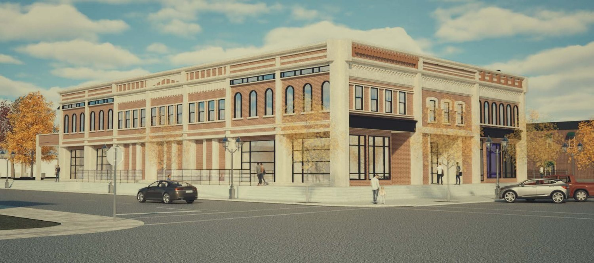
As businesses moved toward the highway, downtown Waterloo lost much of the retail, housing, and community space that helped keep it active. Local spending leaves the county, and more remote workers have few places nearby to work or meet.
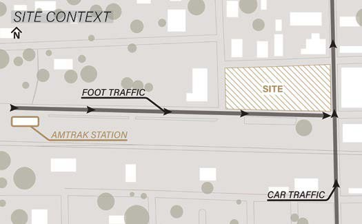
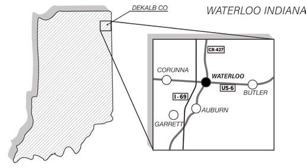
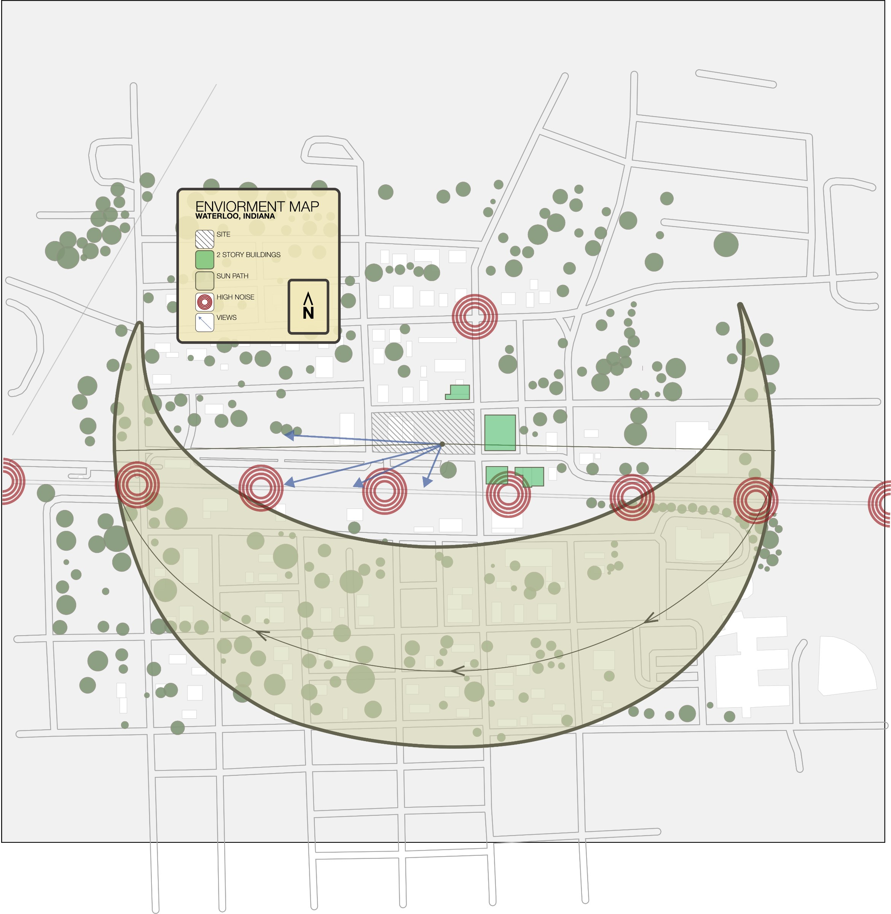
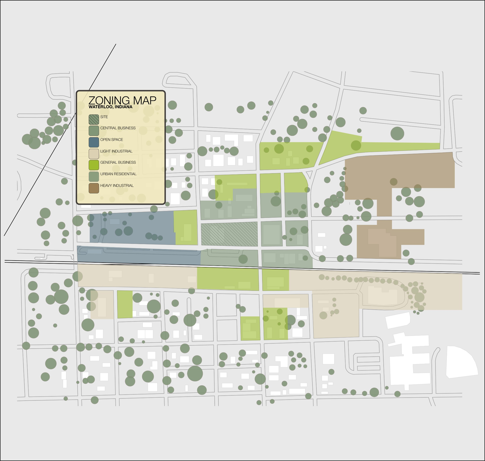
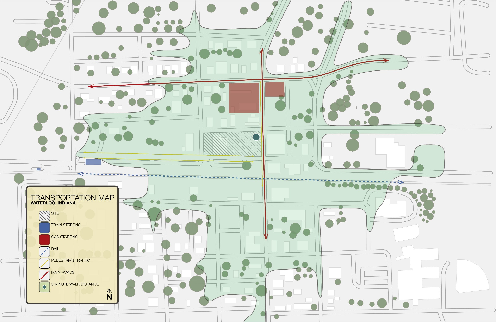
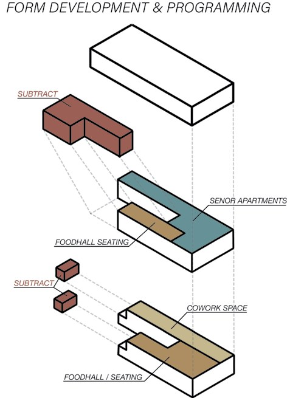
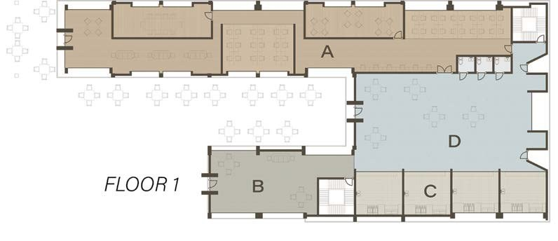
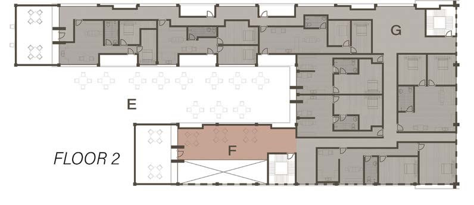
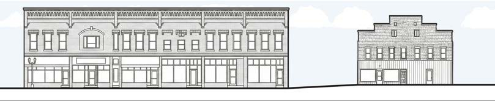
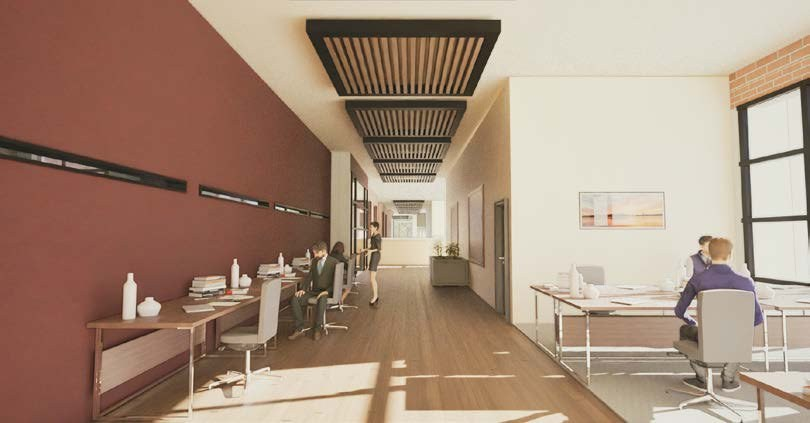